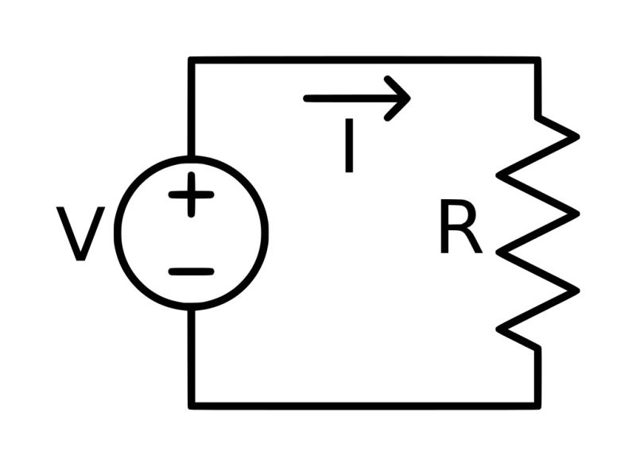
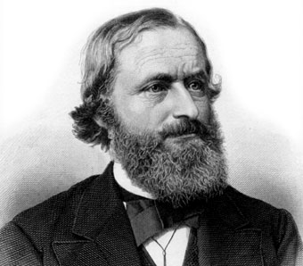
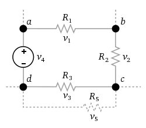

Bloque 1
1.1 Electricidad
Del griego ήλεκτρον élektron (ámbar) es un conjunto de fenómenos producidos por el movimiento e interacción entre las cargas eléctricas positivas y negativas de los cuerpos físicos.
La referencia al ámbar proviene de un descubrimiento registrado por el científico francés Charles François de Cisternay du Fay, que identificó la existencia de dos tipos de cargas eléctricas (positiva y negativa). Las cargas positivas se manifestaban al frotar el vidrio, y las negativas al frotar sustancias resinosas como el ámbar. La energía producida por las cargas eléctricas puede manifestarse dentro de cuatro ámbitos: físico, luminoso, mecánico y térmico.
La corriente eléctrica es una magnitud física, que describe la cantidad de electricidad que pasa a través de un conductor. Existen dos tipos de corrientes, que son: La continua, que no es interrumpida por ningún lapso de vacío, debido a que es en un solo sentido. La otra es la alterna, que se alterna en dirección y no es constante.
1.2 Leyes
1.2.1 Ohm
La ley de Ohm, postulada por el físico y matemático alemán Georg Simon Ohm, es una ley básica de los circuitos eléctricos. Establece que la diferencia de potencial V que aplicamos entre los extremos de un conductor determinado es proporcional a la intensidad de la corriente que circula por el citado conductor. Ohm completó la ley introduciendo la noción de resistencia eléctrica R; que es el factor de proporcionalidad que aparece en la relación entre V*I:
- V=r*i
En un diagrama se muestran las tres formas de relacionar las magnitudes físicas que intervienen en la ley de Ohm, v,r e i
V=R*I R= V/I I=V/R

1.2.2 Kirchhoff
Las Leyes de Kirchhoff describen el comportamiento de la corriente en un nodo y del voltaje alrededor de una malla.

- Primera Ley:
"La suma de las corrientes eléctricas que entran a un nodo es igual a la suma de las corrientes que salen de él".
- Segunda Ley:
"La suma algebraica de de los aumentos y caídas de potencial alrededor de una malla es igual a cero".
